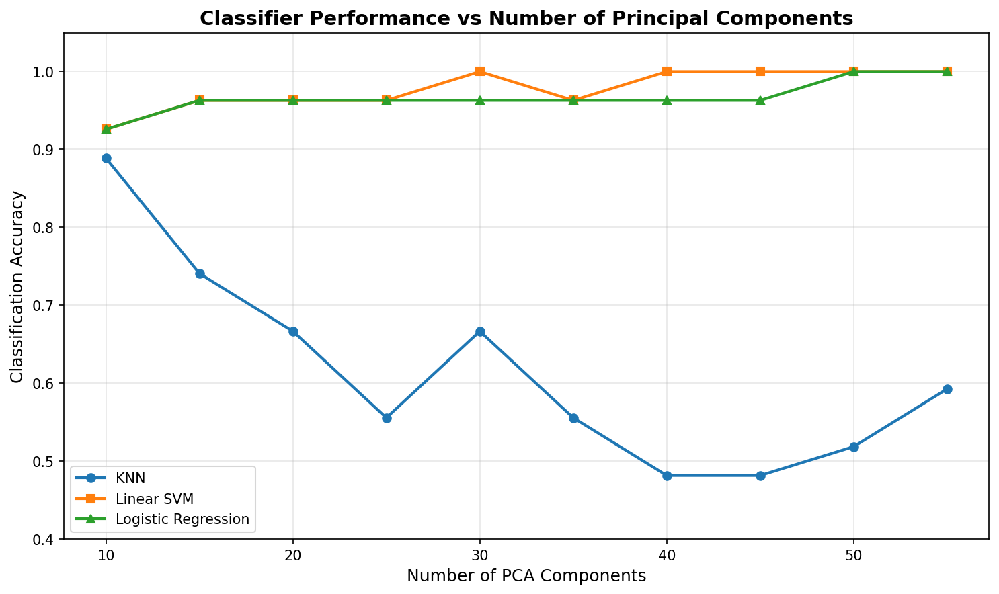
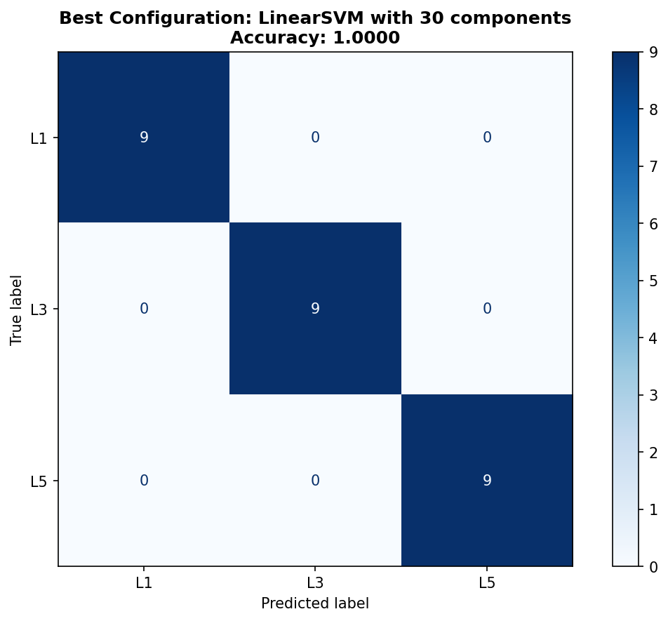
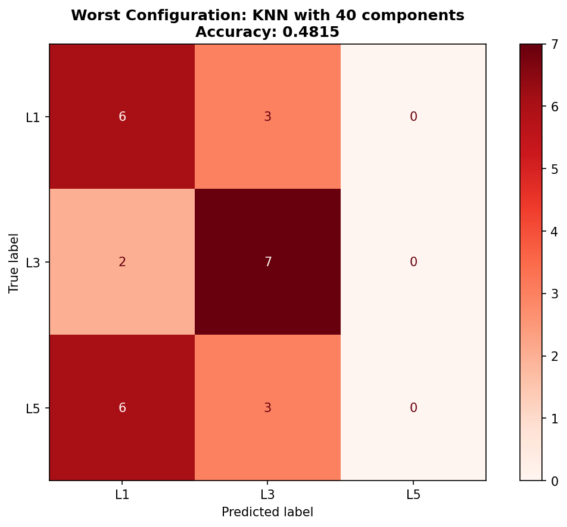

Course: PCA in 3D Shape Analysis
Institution: University of Glasgow
Team Members: 6
Date: December 2, 2025
Instructor: Reza Akbari Movahed
The lumbar spine consists of five vertebrae (L1-L5) that form the lower back region and play a critical role in supporting body weight, enabling movement, and protecting the spinal cord. Accurate classification of individual lumbar vertebrae is essential for clinical diagnosis, surgical planning, and biomechanical research. Traditional manual identification by radiologists is time-consuming, subjective, and prone to variability.
Modern 3D imaging technologies (CT, MRI) can produce high-resolution vertebral meshes. However, these meshes contain thousands of points, resulting in extremely high-dimensional feature spaces. Our dataset contains vertebrae with 4,000 points each, yielding 12,000 features per sample (x, y, z coordinates). This high dimensionality leads to computational challenges including the curse of dimensionality, overfitting, and slow processing.
The primary purpose of this case study is to develop an automated classification framework for distinguishing three lumbar vertebrae types (L1, L3, and L5) using Principal Component Analysis (PCA) for dimensionality reduction combined with machine learning classifiers.
Specific objectives:
The dataset consists of 90 3D vertebral meshes distributed equally across three classes:
| Class | Label | Samples | Description |
|---|---|---|---|
| L1 | 0 | 30 | First lumbar vertebra (uppermost) |
| L3 | 1 | 30 | Third lumbar vertebra (middle) |
| L5 | 2 | 30 | Fifth lumbar vertebra (lowermost) |
Each vertebra mesh contains 4,000 vertices with (x, y, z) coordinates and triangular faces defining surface topology. Critically, all meshes have point-to-point correspondence, meaning the same vertex index represents the same anatomical location across all samples.
Our classification framework consists of the following steps:
Three classifiers evaluated:
The table below shows classification accuracy for all 30 configurations tested:
| Components | KNN Accuracy | Linear SVM Accuracy | Logistic Regression Accuracy |
|---|---|---|---|
| 10 | 88.89% | 92.59% | 92.59% |
| 15 | 74.07% | 96.30% | 96.30% |
| 20 | 66.67% | 96.30% | 96.30% |
| 25 | 55.56% | 96.30% | 96.30% |
| 30 | 66.67% | 100.00% ⭐ | 96.30% |
| 35 | 55.56% | 96.30% | 96.30% |
| 40 | 48.15% ❌ | 100.00% | 96.30% |
| 45 | 48.15% | 100.00% | 96.30% |
| 50 | 51.85% | 100.00% | 100.00% |
| 55 | 59.26% | 100.00% | 100.00% |
⭐ Best configuration: Linear SVM with 30 components (100% accuracy)
❌ Worst configuration: KNN with 40 components (48.15% accuracy)
| Classifier | Mean Accuracy | Best Accuracy | Worst Accuracy |
|---|---|---|---|
| Linear SVM | 97.41% | 100.00% | 92.59% |
| Logistic Regression | 96.30% | 100.00% | 92.59% |
| KNN | 61.48% | 88.89% | 48.15% |
Performance:
Confusion Matrix:
| Predicted | |||
|---|---|---|---|
| Actual | L1 | L3 | L5 |
| L1 | 9 | 0 | 0 |
| L3 | 0 | 9 | 0 |
| L5 | 0 | 0 | 9 |
All predictions were correct (perfect diagonal matrix)

Figure 1: Classifier Performance vs Number of Principal Components
The plot shows accuracy as a function of PCA components for three classifiers. Linear SVM (orange) and
Logistic Regression (green) maintain high accuracy across most settings, achieving 100% at higher component
counts. KNN (blue) demonstrates the curse of dimensionality, with performance degrading as components increase.

Figure 2: Confusion Matrix for Best Configuration (Linear SVM, 30 components)
Perfect classification is achieved with all 9 samples of each class correctly identified. The diagonal
elements are all 9, and off-diagonal elements are all 0, indicating no misclassifications.
Performance:
Error Analysis:

Figure 3: Confusion Matrix for Worst Configuration (KNN, 40 components)
The confusion matrix shows severe misclassification, particularly for L5 vertebrae. KNN never predicted
the L5 class, with all L5 samples incorrectly classified as either L1 or L3. This demonstrates the
curse of dimensionality affecting distance-based classifiers.
This case study demonstrates that PCA-based dimensionality reduction combined with Linear SVM is exceptionally effective for 3D vertebral classification, achieving perfect accuracy while reducing computational complexity by 400×.
Vertebral morphology varies systematically along the lumbar spine. L1 (upper) vertebrae have smaller bodies and longer transverse processes, L3 (middle) vertebrae show intermediate characteristics, and L5 (lower) vertebrae have larger bodies and wider shapes. These consistent anatomical patterns align perfectly with principal components, which represent major modes of shape variation across the dataset.
The Linear SVM's success can be attributed to:
The poor performance of KNN (especially with 40+ components) illustrates the curse of dimensionality:
This framework has direct applications in clinical practice:
The study reveals that 30 components are sufficient to capture all class-discriminative information:
This finding suggests that vertebral shape differences between L1, L3, and L5 are captured by approximately 30 major modes of variation, with additional components representing noise and intra-class variability.
Main Findings:
This case study demonstrates that classical machine learning techniques remain highly competitive for medical 3D shape analysis when data has point correspondence and sample size is limited. While deep learning dominates recent literature, our results show that for well-structured problems, PCA + SVM offers an interpretable, efficient, and highly accurate alternative.
The perfect classification achieved validates that vertebral shape differences along the lumbar spine are linearly separable in PCA space, and that dimensionality reduction is not only beneficial for computational efficiency but actually improves model performance by filtering noise.
End of Report
University of Glasgow | December 2, 2025